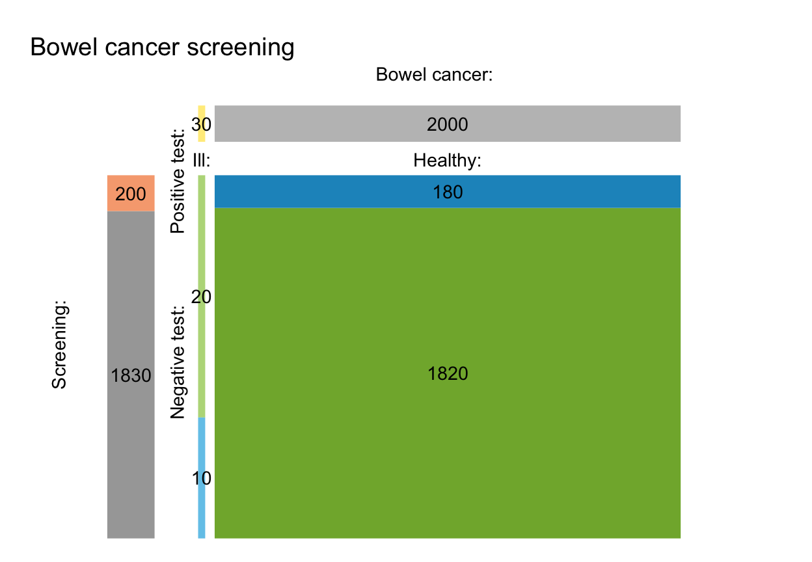
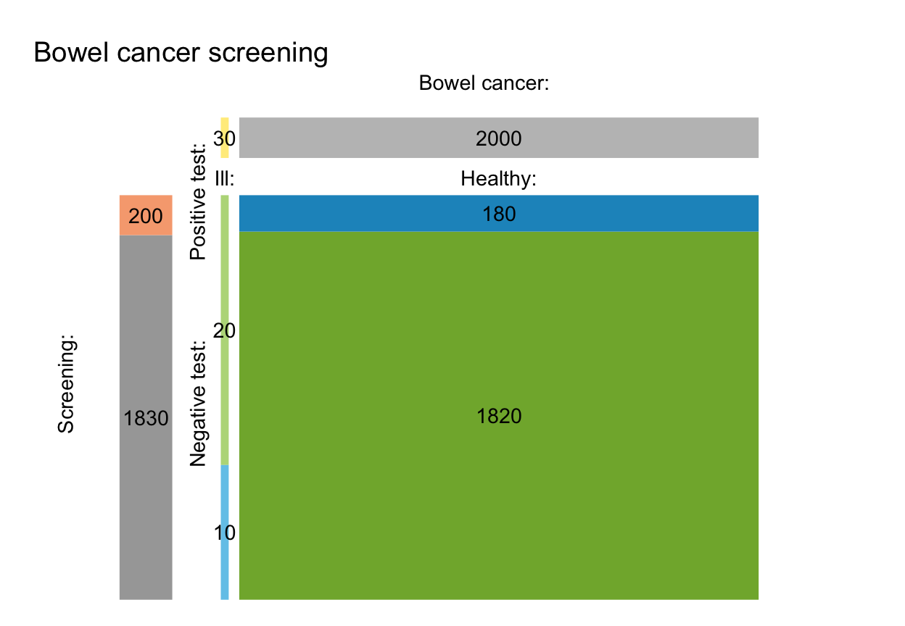

plot.riskyr is a method that allows to generate
different plot types from a "riskyr" object.
Usage
# S3 method for class 'riskyr'
plot(x = NULL, type = "prism", main = NULL, sub = NULL, ...)Arguments
- x
A
riskyrobject, usually a result of a call toriskyr. Pre-definedscenariosare also of typeriskyr.- type
The type of plot to be generated.
- main
Text label for main plot title. Default:
main = NULL(usingx$scen_lblper default).- sub
Text label for plot subtitle (on 2nd line). Default:
sub = NULL(usingsub = "type"shows plot type).The following plot types are currently available:
type = "prism"ortype = "net"ortype = "tree": Risk information is plotted in a network diagram of frequencies and probabilities (default). Seeplot_prismfor further options.type = "tab"ortype = "ftab": Risk information is plotted as a 2-by-2 frequency or contingency table. Seeplot_tabfor further options.type = "area"ortype = "mosaic": Risk information is plotted as a mosaic plot (scaled area). Seeplot_areafor further options.type = "bar"ortype = "fbar": Risk information is plotted as a bar chart. Seeplot_barfor further options.type = "icons"ortype = "iconarray": The underlying population is plotted as an array of icons. Seeplot_iconsfor further options.type = "curve"ortype = "curves": Draws curves of selected values (includingPPV,NPV) Seeplot_curvefor further options.type = "plane"ortype = "planes": Draws a 3D-plane of selected values (e.g., predictive valuesPPVorNPV) Seeplot_planefor further options.
- ...
Additional parameters to be passed to the underlying plotting functions.
See also
riskyr initializes a riskyr scenario.
Other visualization functions:
plot_area(),
plot_bar(),
plot_crisk(),
plot_curve(),
plot_fnet(),
plot_icons(),
plot_mosaic(),
plot_plane(),
plot_prism(),
plot_tab(),
plot_tree()
Other riskyr scenario functions:
riskyr(),
summary.riskyr()
Examples
# Select a scenario (from list of scenarios):
s1 <- scenarios$n1 # select scenario 1 from scenarios
plot(s1) # default plot (type = "prism")
 # Plot types currently available:
plot(s1, type = "prism") # prism/network diagram (default)
plot(s1, type = "tree", by = "cd") # tree diagram (only 1 perspective)
# Plot types currently available:
plot(s1, type = "prism") # prism/network diagram (default)
plot(s1, type = "tree", by = "cd") # tree diagram (only 1 perspective)
 plot(s1, type = "area") # area/mosaic plot

plot(s1, type = "tab") # 2x2 frequency/contingency table
plot(s1, type = "area") # area/mosaic plot

plot(s1, type = "tab") # 2x2 frequency/contingency table
 plot(s1, type = "bar", dir = 2) # bar plot
plot(s1, type = "bar", dir = 2) # bar plot
 plot(s1, type = "icons") # icon array
plot(s1, type = "icons") # icon array
 plot(s1, type = "curve", what = "all") # curves as fn. of prev
plot(s1, type = "curve", what = "all") # curves as fn. of prev
 plot(s1, type = "plane", what = "NPV") # plane as function of sens & spec
plot(s1, type = "plane", what = "NPV") # plane as function of sens & spec
 plot(s1, type = "default") # unknown type: use default plot
#> Unknown plot type (in plot.riskyr): Using type = 'prism'.
plot(s1, type = "default") # unknown type: use default plot
#> Unknown plot type (in plot.riskyr): Using type = 'prism'.